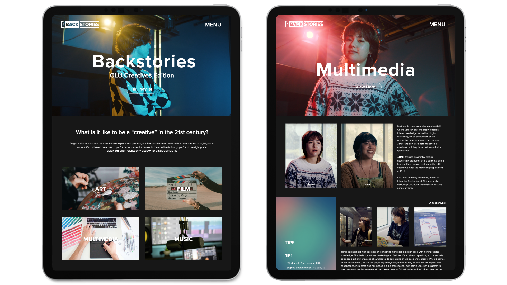

UX / UI
Multimedia Career Starter Kit
UX Research and UI Design Case Study
I worked with the Multimedia department at Cal Lutheran University to research student career preparation and design an online platform that would make the career development process easier and efficient.
Enhancing the iOS Clock App
Mini UX Design Case Study
As a UX / UI designer with a long history of using both iOS and android mobile devices, I took on the challenge of uncovering the iOS clock app's pain points and developing an improved user experience.

Backstories: CLU Creatives
Multimedia Project (Film, Graphics, Web, Music)
Our team of five combined our diverse skillsets to produce a film series and website that showcased the backstories and creative processes of artists from Cal Lutheran University. As team leader and a UX / UI designer, I managed production and designed the website.
